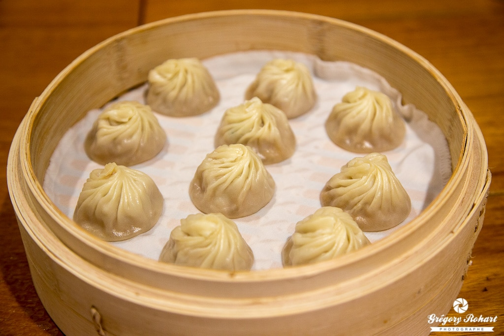
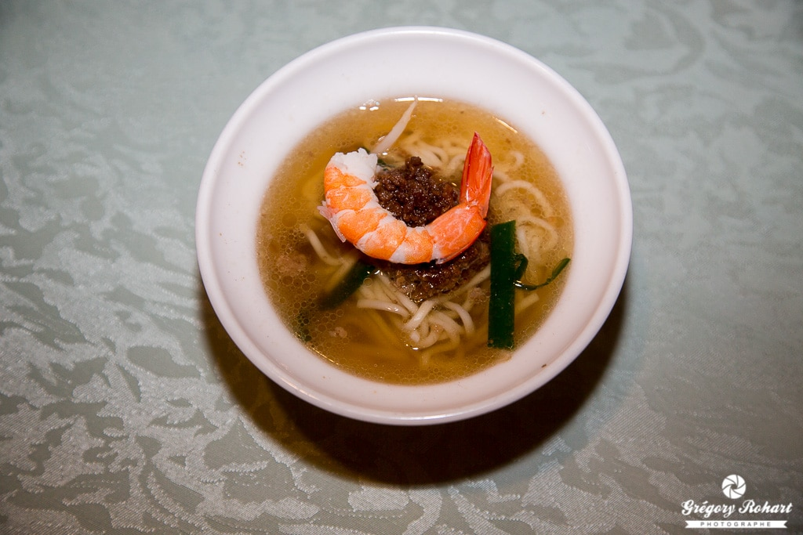
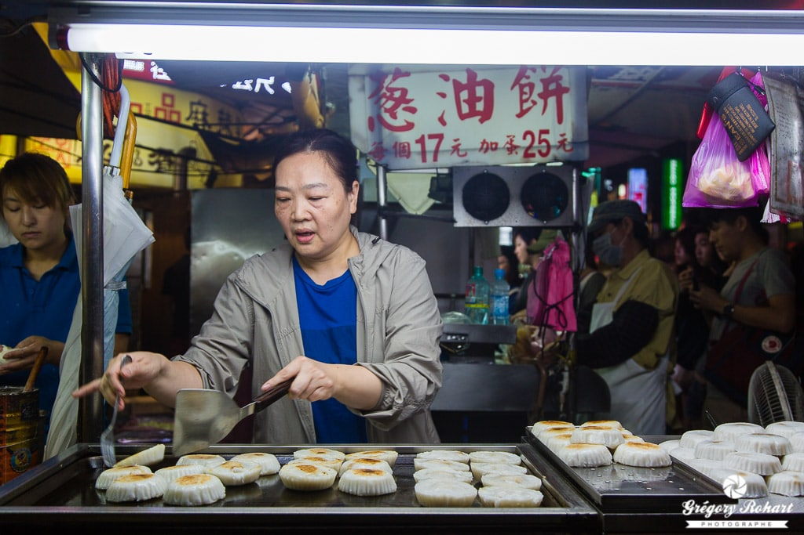

Les plats incontournables à Taiwan
La cuisine taïwanaise peut s’avérer surprenante pour un estomac européen. Passer à table est toujours un moment plein de surprises. Les taïwanais ne se contentent pas d’un seul plat ; ils préfèrent disposer d’une ribambelle de plats dans lesquels ils picorent selon leurs envies. Loin d’avoir découvert toute la variété de la cuisine taïwanaise.
TOFU PUANT

Avec le riz, le tofu constitue la base de la nourriture taïwanaise. Il est issu de la coagulation du lait de soja. On le trouve sous de nombreuses formes à travers le monde. Les taïwanais apprécient le tofu puant. Et croyez moi, il porte bien son nom. Il pue autant parce qu’il est fermenté. On en trouve partout à Taïwan, dans les restaurants comme sur les marchés de nuit de Taipei. Le pire dans cette histoire, c’est qu’il est aussi mauvais en bouche que nauséabond. C’est cependant un plat frit qui perd son odeur une fois qu’il est froid.
XIAO LONG BAO
Un xiao long bao est une variété de ravioli de blé très populaire à Taïwan. J’en raffole ! Concrètement,un xiao long bao est cuit à l’étuve, d’où son nom qui signifie « petit sac à l’étuve ». Il peut-être farci de viande, poisson ou légume et être accompagné d’un bouillon. Un bon xiao long bao est légèrement juteux, avec une pâte fine et une farce aérée. Une des meilleures adresses pour en manger est la chaîne de restaurant haut de gamme Din Tai Fung.
A CHACUN SA NOODLE SOUP
Contrairement à ce que l’on peut penser, la soupe se mange au milieu du repas à Taïwan. Les taïwanais sont de grands amateurs de soupe de requin. Mais je ne recommande pas cette soupe pour ne pas encourager la pêche aux squales. Il existe de nombreuses autres soupes délicieuses à Taïwan à base de seiche, calamar, huitre pour les produits de la mer mais aussi au porc, au bœuf au canard. Elle est généralement servie avec des nouilles.
THÉ AUX PERLES DE TAPIOCA

Si le Oolong taïwanais a la faveur des grands spécialistes de thé à travers le monde, c’est bien le thé aux perles noires de Tapioca qui fait fureur auprès des jeunes de Taïwan. Inventé à Tainan dans les années 80, c’est un mix de thé et de lait parfumé aux fruits avec des boules noires de tapioca. Localement, on les appelle boba, de l’argot qui veut dire gros nichon.
MOCHI POUR LE DESSERT
Les desserts ne sont pas légions dans les restaurants traditionnels taïwanais. Le mochi ou encore môa-chî ou encore Dango est un petit gâteau en forme de boulettes à base de riz gluant.On en trouve sous différentes formes : en brochettes frits recouvertes de sauce, dans la soupe ou en pâtisserie. J’adore le mochi en dessert que j’ai mangé saupoudré de cacahuète ou de noix de coco. Sa pâte est particulièrement gluante. Un musée du mochi a même ouvert ses portes à Nantou.Il y a bien d’autres plats étranges à découvrir à Taiwan pour un palet occidental : omelette aux huitres, œuf de cent ans, calamars frits, pain cercueil, gelée de Mesona chinensis…